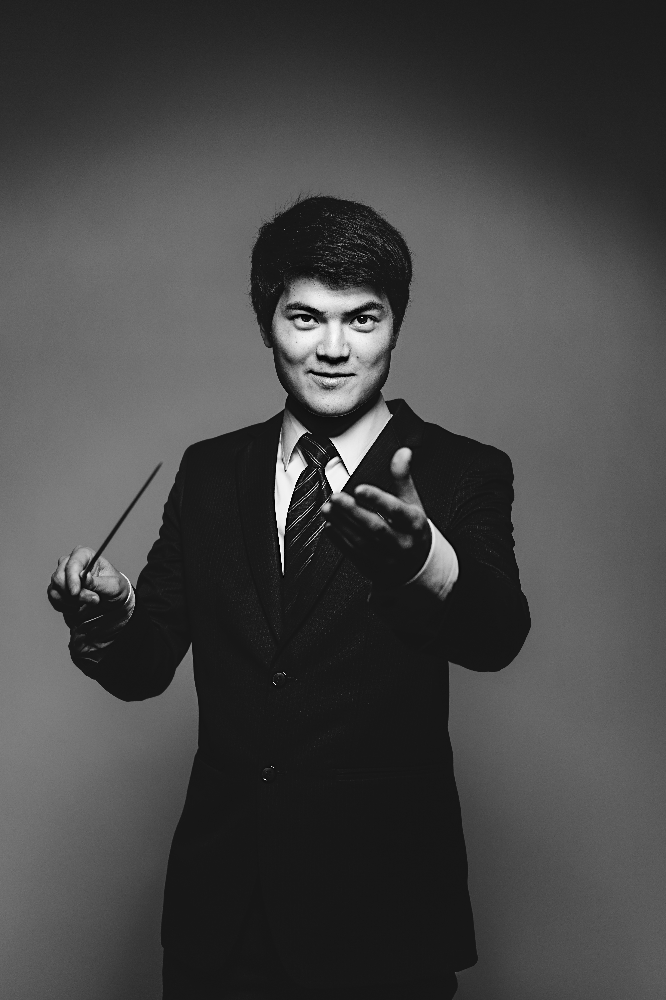

Edvin Andre Simenstad er både dirigent og klarinettist, utdannet ved Norges Musikkhøgskole med Bachelor- og Mastergrad i dirigering. Han har opparbeidet seg solid faglig kompetanse og har gjort seg bemerket i det musikalske miljøet. Som dirigent har Edvin utført oppdrag med flere anerkjente ensembler slik som Kongelige Norske Marinens musikkorps, Hærens musikkorps og Göteborg Wind Orchestra. I 2014/15 fikk han æren av å være assistentdirigent for Andreas Hanson og Forsvarets Stabsmusikkorps, hvor han bidro til å lede noen av landets fremste musikere.
I tillegg til å være en dyktig dirigent har Edvin også vært en ledende rolle som klarinettist i flere ensembler. Hans engasjement som konsertmester i Norsk Blåseorkester, Vestre Aker musikkorps og Lillestrøm musikkorps, har gitt ham muligheten til å vise frem sin musikalitet og dedikasjon på ulike arenaer. I tillegg er han kunstnerisk leder for Lillestrøm Harmoniensemble.
Med en brennende lidenskap for musikk for blåsere, har Edvin satt sitt preg på repertoaret for disse instrumentene. Hans kreative arrangementer og transkripsjoner av klassisk musikk har vekket oppsikt og blitt høyt verdsatt av både musikere og lyttere. Gjennom sitt arbeid har han gitt nytt liv til velkjente komposisjoner og samtidig utforsket nye lydmuligheter innenfor blåsemusikken. Edvins kombinasjon av talent, lidenskap og kunnskap, har gjort at han har befestet seg som en fremragende musiker. Han fortsetter å utforske nye musikalske horisonter og spre sin kjærlighet for blåsemusikken til et stadig større publikum.